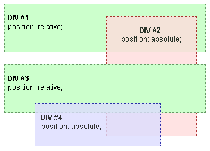

« CSS « Understanding CSS z-index
Let's start with a basic example. In the root stacking context we have two DIVs (DIV #1 and DIV #3), both relatively positioned, but without z-index properties. Inside DIV #1 there is an absolutely positioned DIV #2, while in DIV #3 there is an absolutely positioned DIV #4, both without z-index properties.
The only stacking context is the root context. Without z-indexes, elements are stacked in order of occurrence.

If DIV #2 is assigned a positive (non-zero and non-auto) z-index value, it is rendered above all the other DIVs.
Then if DIV #4 is also assigned a positive z-index greater than DIV #2's z-index, it is rendered above all the other DIVs including DIV #2.

In this last example you can see that DIV #2 and DIV #4 are not siblings, because they belong to different parents in the HTML elements' hierarchy. Even so, stacking of DIV #4 with respect of DIV #2 can be controlled through z-index. It happens that, since DIV #1 and DIV #3 are not assigned any z-index value, they do not create a stacking context. This means that all their content, including DIV #2 and DIV #4, belongs to the same root stacking context.
In terms of stacking contexts, DIV #1 and DIV #3 are assimilated into the root element, and the resulting hierarchy is the following:
<div id="div1"> <br /><span class="bold">DIV #1</span> <br />position: relative; <div id="div2"> <br /><span class="bold">DIV #2</span> <br />position: absolute; <br />z-index: 1; </div> </div> <br /> <div id="div3"> <br /><span class="bold">DIV #3</span> <br />position: relative; <div id="div4"> <br /><span class="bold">DIV #4</span> <br />position: absolute; <br />z-index: 2; </div> </div> </body></html>
.bold {
font-weight: bold;
font: 12px Arial;
}
#div1,
#div3 {
height: 80px;
position: relative;
border: 1px dashed #669966;
background-color: #ccffcc;
padding-left: 5px;
}
#div2 {
opacity: 0.8;
z-index: 1;
position: absolute;
width: 150px;
height: 200px;
top: 20px;
left: 170px;
border: 1px dashed #990000;
background-color: #ffdddd;
text-align: center;
}
#div4 {
opacity: 0.8;
z-index: 2;
position: absolute;
width: 200px;
height: 70px;
top: 65px;
left: 50px;
border: 1px dashed #000099;
background-color: #ddddff;
text-align: left;
padding-left: 10px;
}
{{ EmbedLiveSample('Example', '', '', '', 'Web/CSS/CSS_Positioning/Understanding_z_index/Stacking_context_example_1') }}
z-index is not used.z-index to change default stacking.z-index on all levelsz-index on the second level